Introduction
1.1 Optimisation
Optimisation is the mathematical procedure for finding the best choice of a set of variables subject to a range of constraints. It is a huge subject, and we will focus on two specific model problems as motivation.
The first is the diet problem. We have a population that we want to keep healthy. We assume they are isolated, or resource limited in some way: think of astronauts, or explorers at sea, or a population at war. That means we want to provide food that meets their essential nutritional needs (enough energy, protein, and so on) whilst minimising its cost (which might be in terms of money, or weight, or volume, or something else). The best choice has the smallest cost. The constraints we need to satisfy are the essential nutritional needs.
The second is the shortest path problem. We want to travel between two points with the minimum cost. We are thinking of a road or other transport network as the underlying example here. The best choice again has the smallest cost, which again might be in terms of money, or time, or distance. The constraints are the costs needed to go between any two underlying points, or along one single path, on the network.
1.1.1 Purpose of these notes
These notes will give the minimum expected material for this course. They are mainly here to develop the theory and the analysis. For (much) more detail see the books
-
1.
Operations Research, Winston, QA264.2 WIN.
-
2.
Linear Programming, Chvátal, QA265 CHV.
Neither are needed, but those (and other similar books in the library and elsewhere) will give many additional ideas, examples, and exercises.
1.1.2 Links to other modules
Whilst it may seem that a modules whose purpose is finding extreme values would naturally link with calculus, this is in fact only a small link. The main connection will be to Linear Algebra, particularly the use of matrices and vectors to formulate the problem and for key steps in the arguments. You will need to be comfortable with matrices and matrix operations, linear independence, and basis vectors. If in doubt refer to your Linear Algebra notes.
Linear programming
2.1 The problem
We start with a minimal diet problem. We have three types of food available to us: bread, milk, and eggs. We have three nutrients we need above certain minimum levels: carbohydrates, proteins, and vitamins. We want to minimise the cost of the food we need whilst ensuring we get enough nutrients.
2.1.1 The problem in words
The example numbers we will use are as follows. The unit cost (cost in GB pounds per 100 gram serving) of each food type is
Food |
Cost |
Bread |
2.5 |
Milk |
1.2 |
Eggs |
0.8 |
The amount (in grams) of each nutrient per unit (100 gram serving) of food is
Food |
Carbs |
Proteins |
Vitamins |
Bread |
300 |
5 |
0.07 |
Milk |
30 |
50 |
0.02 |
Eggs |
20 |
90 |
0.12 |
To stay healty, the daily diet should contain at least the minimum quantity of each nutrient, which is
Nutrient |
Minimum quantity |
Carbs |
300 |
Proteins |
600 |
Vitamins |
1 |
2.1.2 The problem as equations
We will now abstract away the details to construct a problem to solve.
The variables we care about are the number of servings of each food stuff. We denote these for the number of servings of bread, milk, and eggs respectively. These are real numbers (we can eat a fraction of a serving), but cannot be negative (we cannot eat a negative amount of food). Hence
The total cost of the diet is the sum of the unit costs multiplied by the number of servings in the diet. This is the objective function that we want to minimise. Hence
is the total cost to be minimised.
Finally, we have the constraints, which are the nutritional needs for the diet. Each separate nutrient gets its own equation. The total amount of each nutrient in the diet is the amount of nutrients per unit serving multiplied by the number of servings. Therefore the constraints are
Typically the mathematical problem is summarized as
2.1.3 A more general form
The specific coefficients are needed to solve the problem, but obscure some of the mathematical structure. We introduce more general notation to make the structure clearer. First, the number of constraints will be denoted (this is the number of nutrients in this example). Next, the number of foods will be denoted (this is the number of variables in the objective function). Then the problem can be written as
The coefficients are written (the amount of the nutrient per unit of the food), (the daily required amount of the nutrient), and (the cost of the food).
2.2 The graphical solution
We will simplify the problem even further to illustrate the key points of the solution method. Restrict to two variables (for example, consider only bread and eggs, as no milk is available). We will look at the simple problem
This is a problem with three constraints () and two variables (), and the coefficients can be read off from the equations (for example, ). Note that key points of the problem are reversed compared to the diet problem: we are maximising, not minimising, and the constraints are less-than-or-equals rather than greater-than-or-equals.
Each of the constraints describes a line in which splits the plane into two regions. In one region the constraint is satisfied; in the other it is not. We want to draw the region where all the constraints are satisfied. This is the feasible region. An example is in figure 2.1.
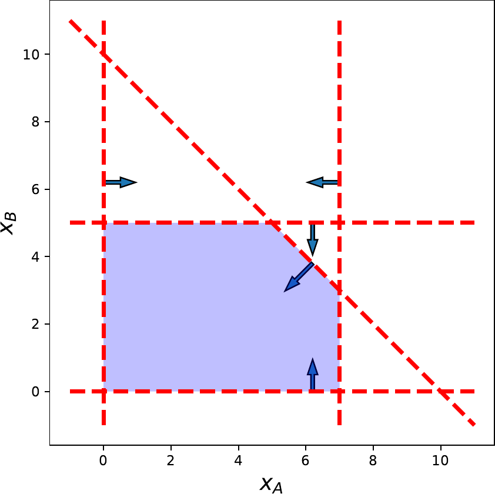
We want to find the point in the feasible region where the objective function is maximised (in this case: in the diet problem, we want to minimise). The level curves of the objective function are lines where are constant. These are straight lines which we can also plot. We also need the line that is orthogonal to the level curves: this is the gradient of the objective function which, in this case, is . For linear problems we generally have .
Our solution method is then as follows. Start from some point within the feasible region (for example, the origin). Move in the direction of the gradient that increases the objective function . Draw level curves through this point. Each point that intersects the feasible region is a valid solution to the problem with the value of the objective function. The last level curve (as we move along the gradient vector) that we can draw will give us the optimal value with its optimal solution . This is illustrated in figure 2.2.
Note that the solution we find has to be at a corner or vertex of the feasible region. Whilst the graphical solution only works for problems with two variables, the intuition (using the gradient and looking at vertices of the feasible region) extends to the general case.
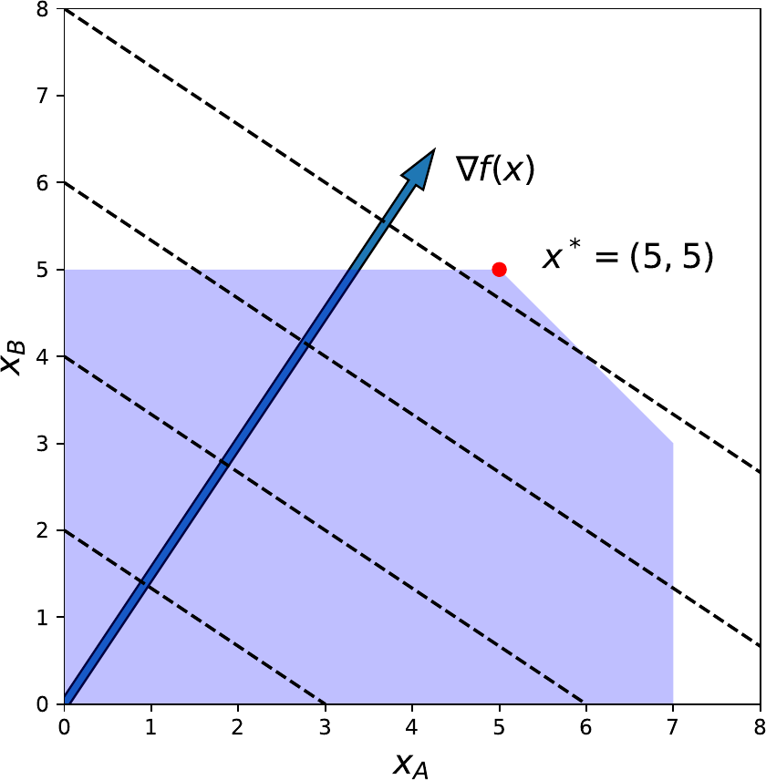
2.3 Properties
Before we construct the general solution method it is useful to look at the form and structure of the problem. This is because there are multiple ways of looking at the problem, each of which is useful in different cases. There are also rules to transform between the cases.
2.3.1 The different forms
Canonical form
This is the form used so far:
This is a maximisation problem, with the inequalities being less-than’s.
Standard form
This is a new form:
This is a minimisation problem. We no longer have inequalities, but only equalities.
Simplified canonical form
This is the simplification of the canonical form we have used so far:
The key difference with canonical form is that we do not impose the variables to be non-negative.
Matrix form
This is the canonical form written in the more compact matrix notation:
Here is a matrix with entries , and and are vectors with entries and respectively. Note that in the objective function we have written
for the inner product between the vector and the vector .
This matrix form is useful for its compactness and the links to Linear Algebra concepts it allows us to make.
2.3.2 Transformation rules
There are a range of rules that allow us to transform between, for example, canonical and standard form, or to change a problem in neither standard form into one of the standard forms.
-
1.
Convert between maximisation and minimisation:
-
2.
Change direction of an inequality:
-
3.
Turn an equation into two inequalities:
-
4.
Turn an inequality into an equation:
-
(a)
For inequalities, introduce , a slack variable. Then
-
(b)
For inequalities, introduce , a surplus variable. Then
-
(a)
-
5.
Turn any variable without a sign restriction into two variables , where .
It is important to note that a number of these steps introduce additional variables and constraints. The exact number of variables and constraints are therefore linked to the form in which we write the problem, and are not properties of the problem itself.
2.4 Geometry of linear programming
2.4.1 Setup
For this section we will work with the simplified canonical form in matrix notation,
We can write any non-negativity constraint as , where is a vector that is zero in all entries except the , where it is 1. This additional constraint can be embedded in the matrix form as an additional row in .
2.4.2 Purpose
Start by remembering the graphical solution method. We argued that the optimal solution had to lie on a vertex of the feasible region. We also argued that we could sort these points using the gradient of the objective function.
The purpose of this section is to prove (at some level of rigour) that this intuition extends away two variables, , where the feasible region is a subset of the plane , to the general case where the feasible region is a subset of . That is, we want to show that the optimal solution lies on a vertex of this feasible region.
2.4.3 Fundamental theorem of Linear Programming
Let and consider the linear program . If is non-empty, the linear program either admits an optimal solution corresponding to one of its vertices, or it is unbounded.
Before we consider the proof let us look at what this says. The region defined in the theorem is the feasible region. We have constructed the subset of in which the constraints are satisfied. As noted in the theorem, it may be that there are no points where the constraints are satisfied (“if is non-empty”): we ignore that case. It is also possible that the feasible region is unbounded and the objective function can increase without limit: this case (where the linear program is unbounded) also needs checking.
To prove this theorem we need to be able to characterise any point in in terms of its vertices in some way. To do this, we need a number of definitions and preliminary results.
Definitions
Consider a single inequality . This splits into two pieces. Define to be the halfspace of points satisfying the inequality. Further define to be the hyperplane of points satisfying the inequality as an equation. The hyperplane bounds the halfspace. The vector is orthogonal to the hyperplane and points out of the halfspace. This is illustrated in figure 2.3.
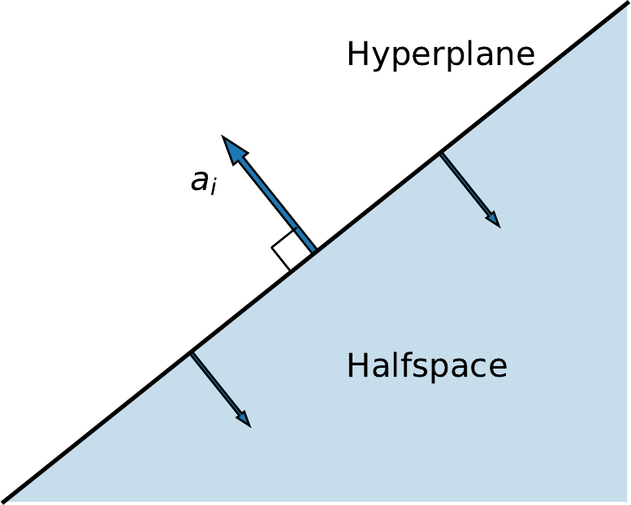
The feasible region is obtained by intersecting the halfspaces for each inequality. The intersection of a finite number of halfspaces is called a polyhedron. Thus the feasible region is a polyhedron.
Given points , their convex combinations are all the points , with
with the restrictions
Intuitively, if the points are the vertices of a face of the polyhedron, the convex combinations describe all points on the face. Illustrations of convex combinations are in figure 2.4 for two points and in figure 2.5 for three points.
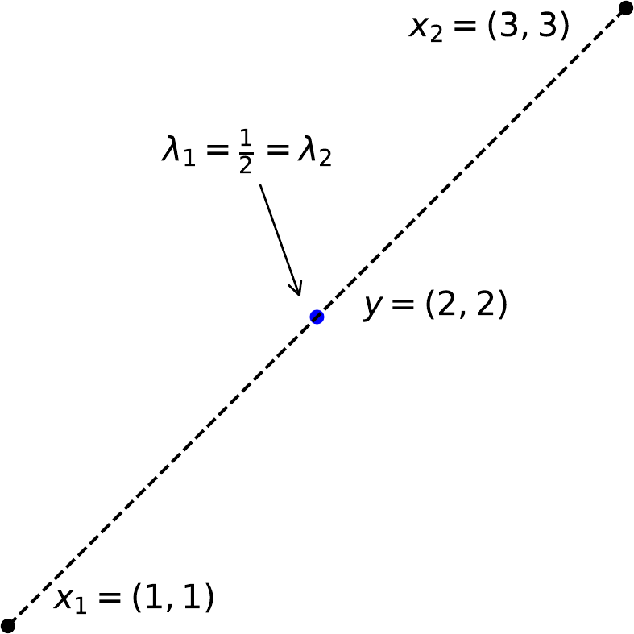
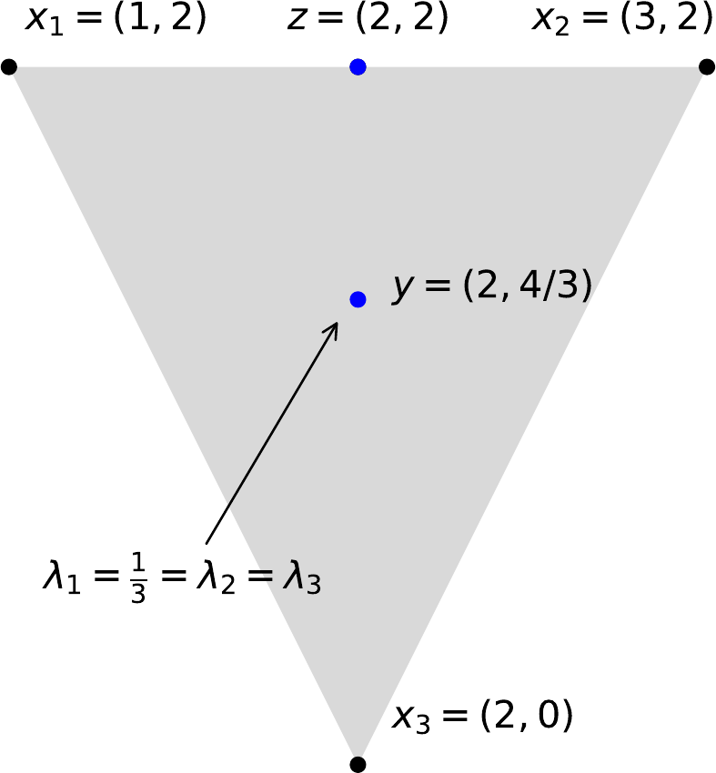
The conic combinations are all the points without the restriction that the multipliers sum to one. Intuitively they generate the hyperplane in full. For two points this is illustrated in figure 2.6.
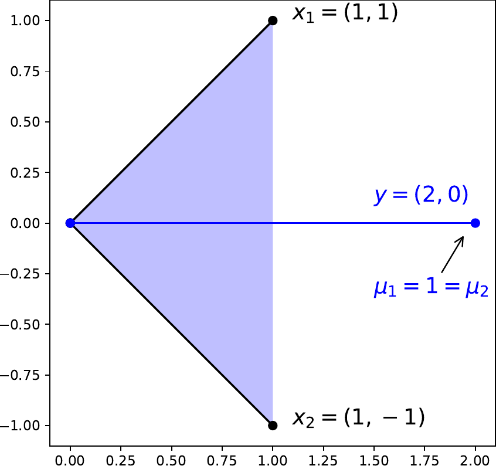
A set is convex if it contains the convex combinations of all of its elements, that is
We think of this as meaning that the straight line segment linking is contained within . Within the plane a circle is convex and a “C” shape is not. These are illustrated in figures 2.7 and 2.8 respectively.
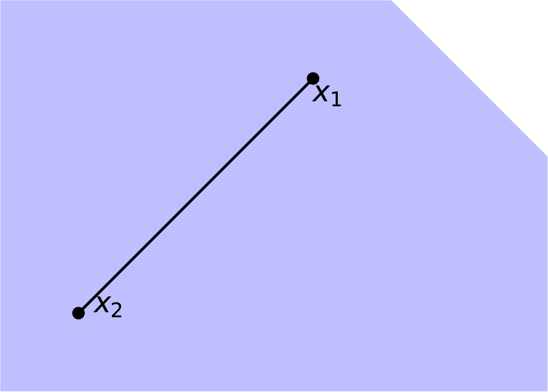
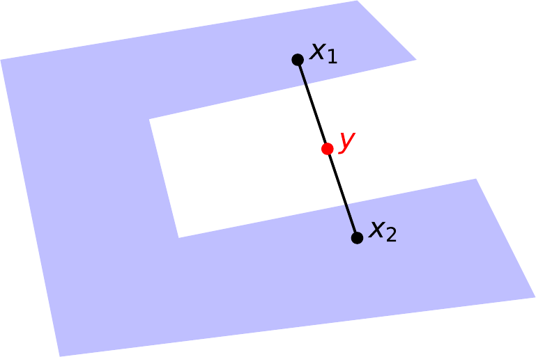
For a given polyhedron , a vertex is a point that cannot be written as a convex combination of two other points in (with all distinct). A face is any planar surface belonging to the boundary of . A facet is any -dimenional face. This is illustrated in figure 2.9.
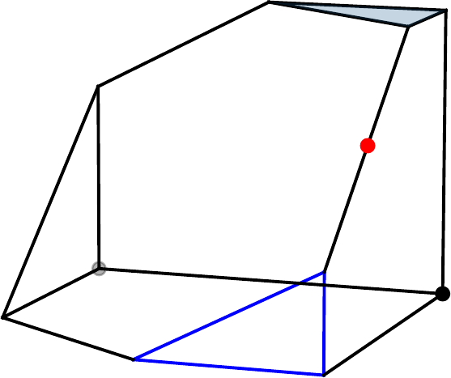
For a set , the vector is a ray if
This requires that the semiline (starting from and moving in the direction of ) is completely contained in (for all points ).
An extreme ray is a ray that cannot be expressed as a conic combination of two other distinct rays , where are all distinct. This is illustrated in figure 2.10.
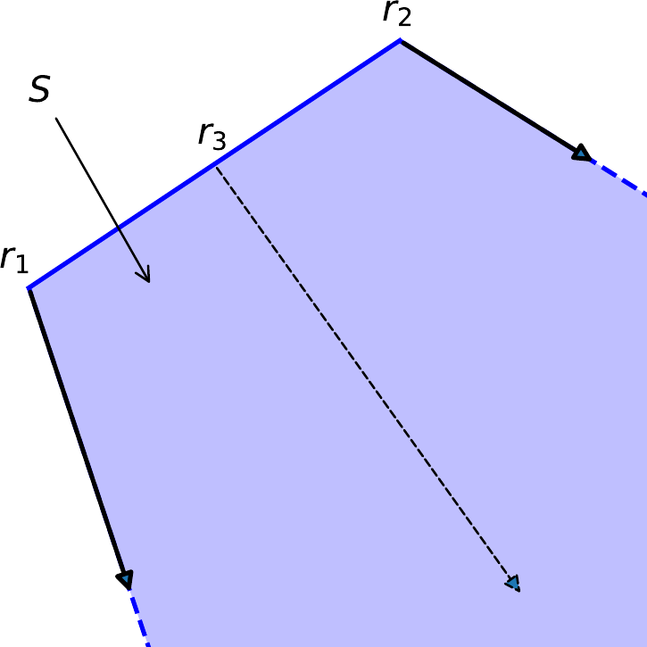
A set is bounded if the norm of all vectors in the set is bounded. That is, such that .
We call a bounded polyhedron a polytope. This is illustrated in figure 2.11.
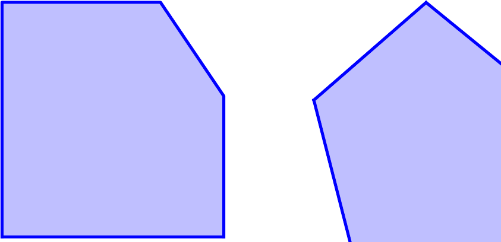
2.4.4 Key results
After that blizzard of definitions we can prove some key results.
Polytopes have no rays.
If a polytope had a ray it would contain a semiline for all values of . By increasing we can increase without bound. This contradicts that a polytope must be bounded.
The feasible region is convex.
Work by contradiction. Assume that , the polyhedron which is the feasible region, is not convex. Then there exists such that the line segment joining has points not in . Start at and move along the line segment until we reach the boundary of . By construction this point must be in a hyperplane. By definition all points on one side of the hyperplane are in and all points on the other side are not. As the line segment has not yet left we have not yet reached , so is on the other side of the hyperplane to . Therefore . This contradicts our assumption.
Convexity makes constructing an algorithm to solve the linear program much simpler. Non-convex problems are much harder to solve. However, our main concern is linking the vertices to points in the interior in order to prove the fundamental theorem.
For a subset , the following statements are equivalent:
-
is a non-empty polyhedron;
-
There are two sets, one of vertices , and another of extreme rays , such that any point can be written
The proof of this theorem is complex and not our key purpose. The point, for our purpose, is that it allows us to express any point within in terms of its vertices. This is illustrated in figure 2.12. This is what we needed to prove the fundamental theorem.
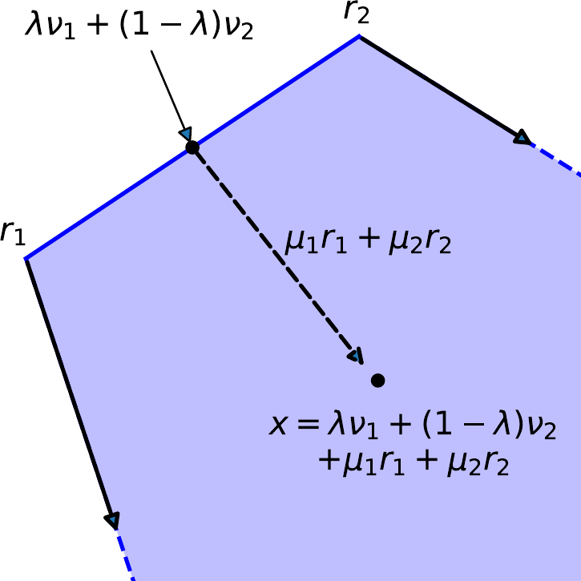
2.4.5 Proof of the Fundamental Theorem
Let and consider the linear program . If is non-empty, the linear program either admits an optimal solution corresponding to one of its vertices, or it is unbounded.
Let be a point in the feasible region. Write
using the Weyl-Minkowski theorem. The values of are constrained to be non-negative, and additionally the values of must sum to one.
We now want to change variables from to . That is, we want to re-write our linear program in terms of the vector . First re-write the objective function as
This sums over every entry of the vector ; the coefficients are the inner product of with either a vertex or a ray .
Next, write the constraints applied to . These are
We are therefore solving the linear program given by maximsing over all points in the feasible region within -space.
Now look at the objective function. If for some ray we can increase , and hence the objective function, arbitrarily. This means the linear program is unbounded.
The alternative is that for all rays. In this case the optimal solution requires for all , as any non-zero coefficient would only reduce the objective function. Therefore
and the optimal value has to be a linear combination of the values taken by the objective function at vertices. This gives us a finite number of values to check, and we conclude that
There is, then, an optimal solution corresponding to a vertex .
2.4.6 Sanity checks
Interior points cannot be optimal
An alternative negative proof can show that interior points cannot be optimal. This does not show the link between vertices and optimal points, but gives more confidence. An illustration is in figure 2.13.
Any point in the interior of cannot be optimal.
Work by contradiction. Assume there is a point in the interior of that is optimal. Construct a ball of radius around , . We need so that all points are within the feasible region.
Now consider a point where is small enough that . As is the gradient of the objective function it must be the case that (for maximisation problems) the objective function at is greater than at . Therefore is not optimal and we have a contradiction.
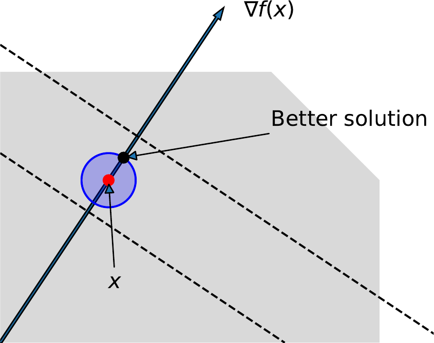
Non-vertices may be optimal
Note that it is possible for multiple vertices to have the same, optimal, value of the objective function. In this case points within the facet (in its relative interior) linking these vertices will have the same optimal value. This may occur when the facet is orthogonal to the gradient of the objective function, .
However, this does not matter. The theorem guarantees that an optimal solution can always be found at some vertex. In this case there are infinite optimal solutions obtained by convex combinations of the vertices of the facet, and all of the vertices are optimal. This is illustrated in figure 2.14.
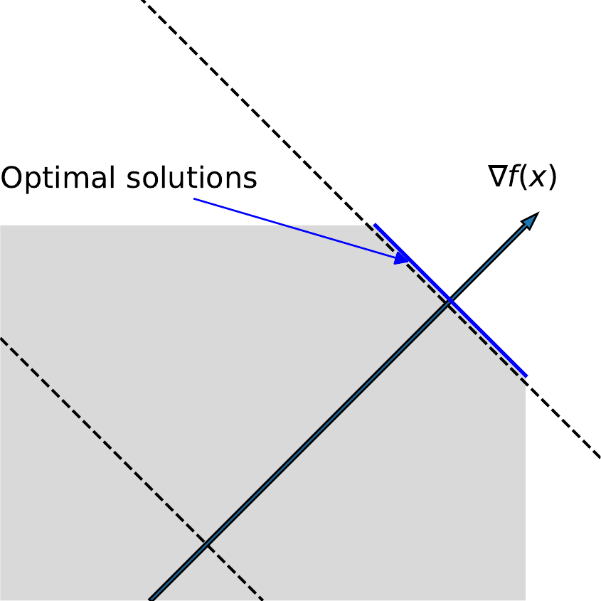
2.4.7 Brute force solutions
The fundamental theorem therefore gives us a method to find the optimal solution of a linear program. That is, we first identify all vertices of the feasible region. We then evaluate the objective region at each vertex. By enumeration we then find which is optimal.
For example, consider the problem from the graphical solution section,
This has five vertices from the intersections of the four constraints.
In general we expect a feasible region with variables and constraints to be represented by a polyhedron with approximately
vertices. The geometric growth of the number of vertices make enumeration impractical, even with modern computers.
Sorting
3.1 The motivation
In the previous chapter we saw how a linear program could be solved. We can find every vertex of the feasible region and then evaluate the objective function at all vertices. By sorting this values we then have the optimal solution.
However, we claimed that this method was impractically slow, as the computational cost can grow as (sometimes called exponentially, or geometrically). We should make this explicit. Assume that one operation (finding one vertex and computing the objective function there) takes one microsecond, . Then compare how long it would take if the computational cost were linear (grows as ), quadratic (grows as ), or geometric (grows as or as ) as the number of vertices increases:
Vertices () |
Linear () |
Quadratic () |
|
|
|
|
|
|
|
|
|
|
|
|
|
|
|
|
|
We see that the power law cases (linear and quadratic) both complete in fractions of a second for a hundred vertices, whilst neither geometric case will complete within the lifetime of the universe. Note that Chvátal, writing around 1980, comments that problems with were being solved routinely. In modern usage linear programs with are being solved in under a minute by the best solvers.
3.2 The problem
The problem, for this chapter, is to understand how to analyse an algorithm. Once we can measure how fast, in principle, an algorithm completes its task, we can use this to compare different techniques.
We will not apply this analysis to linear programming algorithms at first, as there is a simpler case at hand. That is the final step in our impractical algorithm for linear programs: sorting a list of numbers.
3.2.1 Sorting
The sorting problem is to take a list of objects with a partial order , sort the list into non-decreasing order.
The type of the objects is left unspecified. They could be real numbers or integers, which will be our standard examples. They could be letters or words. The key point is that it must be possible to compare any two objects in the list to give an order. That is, , the comparison must be either true or false. A list containing all integers is fine. A list containing a mix of letters and numbers is not (without further assumptions). A list containing complex numbers is not fine either.
We assume the list has length and refer to the individual entries in the list as , where is the index. We are looking to construct a permutation operator which is a bijective function on the indexes. The permutation operator tells us where to go in the original list to find the object at a given position in the sorted list.
Formally, the problem is to find a permutation such that
As a concrete example, consider the list . By eye we see the sorted list is . Looking at the indices we construct the permutation:
3.3 Algorithms
We look at three different sorting algorithms before introduing a detailed analysis.
3.3.1 Brute Force Sort
This is a two step process.
-
1.
Enumerate all possible permutations of length .
-
2.
Return the first permutation giving a sorted list.
This is closely linked to the impractical algorithm introduced to solve the linear programming problem.
It is possible that only one permutation sorts the list, and that (by bad luck) it is the last one constructed. Given a list with items we can construct permutations of that list (consider how many positions the first object can take, then, having fixed the first, how many the second can take, and so on). For large we have that , and we have seen how rapidly that grows.
3.3.2 Selection sort
This is an iterative process.
-
1.
Find the smallest object.
-
2.
Swap it with the object in position one (if strictly smaller).
-
3.
Find the next smallest object in the list; alternatively, consider the list except the first object.
-
4.
Swap it with the object in position two (if strictly smaller).
-
5.
Continue to the end of the list.
When implemented in code this algorithm requires two loops. The outer loop runs over the whole list and corresponds to the position we are going to swap the “smallest” object into. The inner loop is to find the smallest object, and runs over only part of the list.
The steps for are as follows. When we find the smallest object it will be in the sublist denoted by square brackets:
-
1.
-
(a)
: Smallest object in is at index .
-
(b)
: Swap with object at index , giving .
-
(a)
-
2.
-
(a)
: Smallest object in is at index .
-
(b)
: Do not swap as already at index , giving .
-
(a)
-
3.
-
(a)
: Smallest object in is at index .
-
(b)
: Do not swap as already at index , giving .
-
(a)
-
4.
-
(a)
: Smallest object in is at index .
-
(b)
: Swap with object at index , giving .
-
(a)
-
5.
-
(a)
: Smallest object in is at index .
-
(b)
: Swap with object at index , giving .
-
(a)
-
6.
We have reached the last object, so the list is sorted.
3.3.3 Insertion sort
Conceptually this process splits the list into two pieces, or sublists. One is sorted and the other unsorted. We write where marks the separation between the sublists. At the start is empty and . Then, while is not empty, we
-
1.
Compare the first entry of the unsorted list with each entry of the sorted list in turn from the right.
-
2.
If , swap the entry in the sorted list with the first entry in the unsorted list. Do this for each entry in the sorted list until is in order.
-
3.
Move the separation marker one entry to the right (so that , which was swapped with , is still in the sorted list).
As with selection sort, when implemented in code we have two loops, one running over the whole list and one over some part of the list. We may expect the computational cost of the two to be similar.
The steps for are as follows.
-
1.
-
(a)
has nothing in the unsorted list.
-
(b)
Move the separation marker to the right, giving .
-
(a)
-
2.
-
(a)
As , swap and , giving .
-
(b)
Move the separation marker to the right, giving .
-
(a)
-
3.
-
(a)
As , swap and , giving .
-
(b)
As is not less than no further sorting is needed.
-
(c)
Move the separation marker to the right, giving .
-
(a)
-
4.
-
(a)
As , swap and , giving .
-
(b)
As is not less than no further sorting is needed.
-
(c)
Move the separation marker to the right, giving .
-
(a)
-
5.
-
(a)
As , swap and , giving .
-
(b)
As , swap and (what was) , giving .
-
(c)
As , swap and (what was) , giving .
-
(d)
As , swap and (what was) , giving .
-
(e)
Move the separation marker to the right, giving .
-
(a)
-
6.
-
(a)
As , swap and , giving .
-
(b)
As , swap and (what was) , giving .
-
(c)
As is not less than no further sorting is needed.
-
(d)
Move the separation marker to the right, giving .
-
(a)
-
7.
The unsorted list is empty, so the sorted list is complete.
3.4 Analysis of algorithms
We have three different algorithms to sort a list, and a rough idea of how they will behave. However, that rough idea could easily be wrong. If the first permutation generated by the brute-force method sorts the list then it is faster than either selection or insertion sort.
Equally, it is generally impractical to work out how long a sorting algorithm may take in all cases and describe the result statistically, as the time taken will diverge to infinity with the size of the list.
Instead, we will look at the worst case: what is the maximum length of time an algorithm may take?
3.4.1 Definitions
An elementary operation (EO) is any simple operation an algorithm may take with roughly the same cost. Examples would be comparisons, swaps, additions, multiplications, or assigning a value to a variable.
The instance size is a number that characterises the size of the problem. When sorting it would be the length of the list .
In the worst case analysis we reduce every choice that the algorithm makes to the one needing the most elementary operations.
Useful results
The Gauss series or arithmetic progression formula is
The size of a set of consecutive integers, is
3.4.2 Selection Sort
1for i in range(0, n-1):
2 j = i
3 for k in range(i+1, n):
4 if a[k] < a[j]:
5 j = k
6 if a[j] < a[i]:
7 a[i], a[j] = a[j], a[i]
This Python code performs selection sort.
-
Line 1 loops times over:
-
Line 2 assigns one value (1 EO);
-
Line 3 loops times over:
-
Line 4 does one comparison (1 EO);
-
Line 5 assigns one value (1 EO);
The total cost of the loop is EOs;
-
-
Line 6 does one comparison (1 EO);
-
Line 7 does one comparison (1 EO);
The total cost of the loop is
-
We see that the analysis gives the worst case of selection sort as . As shown earlier this grows much more slowly that the worst case for the brute-force algorithm. Selection sort may be practical.
3.4.3 Insertion Sort
1for i in range(1, n):
2 for j in range(i, 0, -1):
3 if a[j] < a[j-1]:
4 a[i], a[j] = a[j], a[i]
5 else:
6 break
This Python code performs insertion sort.
-
Line 1 loops times over:
-
Line 2 loops times over:
-
Line 3 does one comparison (1 EO);
-
Line 4 does one swap (1 EO);
-
Lines 5 and 6 never occur in the worst case.
The total cost of the loop is EOs;
-
The total cost of the loop is
-
We see that the analysis gives the worst case of insertion sort as . For large we expect insertion sort to be slightly faster than selection sort.
3.5 Computational complexity
In general, comparing algorithms by computing the number of elementary operations explicitly can be painfully hard to do. Also, it is often not useful. What we care about is how the cost (the number of elementary operations) grows as the instance size grows. We therefore only care about the largest term in the worst case as .
3.5.1 Big notation
Given two functions , we say that , or is of the same order as , if such that
In other words, for large enough values can be bounded by scaling by a constant. This is illustrated in figure 3.1.
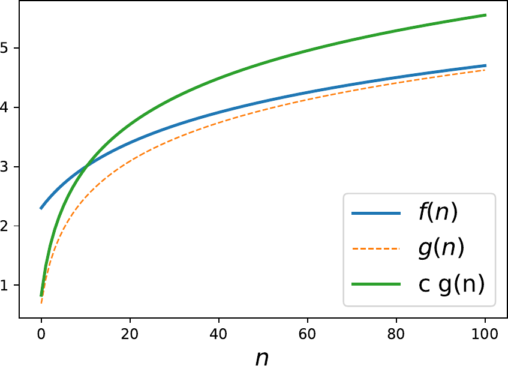
The purpose of computational complexity analysis is to bound any function in terms of a small, simple set of functions . We want the functions to be simple to make the analysis easier. Equally, we want the specific function used to be as close as possible to , so the bound does not over-estimate too much.
3.5.2 Computational complexity
Consider two algorithms and that solve the same problem . Let be the number of elementary operations needed for each algorithm as a function of the instance size. Then is the computational complexity of algorithm (similarly for algorithm ), and we consider to be more efficient than if
asymptotically, in the limit as .
Examples include
-
An algorithm is more efficient than an algorithm.
-
An algorithm is more efficient than an algorithm.
-
An algorithm is more efficient than an algorithm, if .
There are two implicit assumptions we have to make about the functions to make progress. One is that the number of elementary operations is strictly non-negative so that . This seems natural. The other is that is strictly increasing. This need not be true in general, but is usually a very good approximation.
3.5.3 Properties of the asymptotic model
When functions are the same order
Let . If
then and .
The definition of the limit implies such that
This is equivalent to
We now have two cases.
-
1.
From the upper bound we have for all . By setting and , the definition gives that .
-
2.
From the lower bound we have (assuming, without loss of generality, that ) . By setting and , the definition gives that .
This shows that (non-zero!) constant factors are essentially irrelevant.
When one function is of lower order
Let . If
then but .
This is very similar to the previous proof.
The definition of the limit implies such that
This is equivalent to
We now have two cases.
-
1.
From the upper bound we have for all . By setting and , the definition gives that .
-
2.
By contradiction, assume . By definition, there must exist such that for all . Thus
This contradicts the limit . Therefore .
In this case we say that is of lower order than .
Constants are irrelevant
Assume . Then
This follows from theorem 5.1, as
All logarithms are the same
Assume . Then
This follows from the previous case, as
and the term in brackets is a constant.
Lower order terms are irrelevant
If is of lower order than then
Hence theorem 5.1 gives the result.
Shifts are irrelevant
For a monotone increasing function ,
Rounding operators are irrelevant
The ceiling operator returns the smallest integer greater than . We have
This follows from
3.6 Cobham-Edmonds thesis
A suggestion from 1965 by Alan Cobham and Jack Edmonds is that a problem is tractable if
-
1.
there is an algorithm that solves ;
-
2.
has computational complexity at most polynomial in the size of instances of .
Generally we think of tractable problems as solvable on a computer, whilst problems that are not tractable are not. In many specific cases this is untrue, as “average” instances of problems may be solved by the algorithm much faster than the worst case suggests.
This chapter has shown that the sorting problem is tractable, by constructing two algorithms (selection and insertion sort) that are . Neither are the fastest sorting algorithm available. It is important to note that the existence of a slower algorithm (such as brute-force sort, with complexity ) does not mean that the problem in intractable.
The Simplex Method
4.1 Recap
In the previous chapters we introduced the linear programming problem. We saw how this could be solved (graphically) for two variables, and also constructed an impractical, brute-force method that would work (very slowly) for the general case.
Problems of current interest can have thousands of constraints and millions of variables. To solve these we want to introduce and analyse the simplex method. Introduced by Dantzig in 1947, it builds on the fundamental theorem by giving a method of moving, step by step, from one vertex to an adjacent one until the optimal solution is found.
There are a number of steps we need to complete.
-
1.
How do we characterise a vertex (algebraically)?
-
2.
How do we find a vertex to start from?
-
3.
How do we verify if the current vertex is optimal?
-
4.
How do we move from one vertex to the next?
4.2 Setup and assumptions
In this chapter we will use the standard matrix form,
Here are the given coefficients that define the problem. As usual is the number of constraints and the number of variables.
We make three assumptions:
-
1.
. If this is not true for some row so that we can multiply that row (both and for all columns ) by .
-
2.
. That is, the number of constraints is less than the number of variables. If this is not true then the linear system defined by is either square or overdetermined, implying one or no solutions (the feasible region is a single point or empty).
-
3.
has full row rank so its rows are linearly independent.
The second assumption may seem to contradict earlier examples where there were more constraints than variables. However, in all those cases the constraints were inequalities. To transform to standard form we need to increase the number of variables (using slack or surplus variables). This will change all those problems to ones with .
The use of the third assumption can be checked by assuming is not of full row rank. In that case we can use row operations to transform the system to , where the matrix contains two rows and such that
There are then two cases.
-
1.
: the two constraints are identical and one can be dropped from the problem.
-
2.
: the constraints are inconsistent and so the linear problem is infeasible.
So the third assumption stops us from considering infeasible problems and ensures constraints are not repeating information.
4.3 Basic matrices
There is a general mathematical strategy of solving a complex problem by first solving a simple case, then transforming the general case to the simple one. This can seem indirect. The next few sections will build up a simple case for linear programs.
Let be a subset of the column indexes of , with . That is, will identify a number of columns of , corresponding to variables in the linear program, and the number of columns identified will match the number of constraints.
A basic matrix is the submatrix of with linearly independent columns that is obtained by dropping every column with index not in . If is a basic matrix then
-
is square;
-
has full row and column rank (by the assumptions);
-
is invertible, as it has full row and column rank.
We can use this construction to split, of partition, the linear program. Let be the complement of . Let be the components (for the vectors ) or columns (for the matrix ) that are indexed by , and be the components (for the vectors ) or columns (for the matrix ) that are indexed by . Then we can use column operations on the linear program to re-order the vectors and matrices, writing
This means that our standard matrix form description of the linear program becomes
Rewriting this by expanding out the matrix multiplications gives
Why have we made the problem more complicated? Because the basic matrix is invertible, we can directly solve for the optimal basic solution. We have
This allows us to write the objective function as
We can also add the term to the objective function as it vanishes. This is useful later.
This defines the basic form of a standard form linear program: if is a basic matrix then the basic form is
4.4 Basic solutions
When the linear program is in basic form we call the basic variables and the non-basic variables. If there is a solution with we call it a basic solution. A basic solution need not satisfy and so it may not fall in the feasible region. If there is a solution with and also then it is called basic feasible.
Note that the constraints automatically imply that if the solution is basic and so , then
Basic solutions can be constructed by solving the linear system defined by the basic matrix.
4.4.1 Basic solutions and vertices
There is a direct link between basic solutions and vertices.
is a basic feasible solution if, and only if, it is a vertex of the feasible region.
First prove the implication using contradiction.
Let be a basic feasible solution with . Assume, by contradiction, that is not a vertex. As the feasible region is convex, if is not a vertex then there are two distinct points , both distinct from , such that
We can split both points in the same way as the basic feasible solution , as and . This gives
As is a basic feasible solution we have . As we have and . As and are feasible we have . This requires that .
Similarly, as and are feasible, we also have that and . As all the non-basic pieces must vanish, we have that . Since is non-singular (as it is a basic matrix), any linear system defined by it has a unique solution. Therefore . As all the non-basic pieces vanish, we have that . This contradicts the assumption that they are all distinct. Therefore a basic feasible solution is a vertex.
Next prove that a vertex is a basic feasible solution. Define as the set of indexes of the components of the vertex which are positive, . Let be the complement, . Write and re-write as
By construction and so .
We need to show that is a basic matrix. We do this by contradiction. Assume the columns of are not linearly independent. Then there is some such that . By construction . Therefore there is some constant such that
Also by construction we have
Thus the two distinct points are feasible solutions to . Finally, note that
This shows that can be written as the convex combination of two distinct feasible points. This contradicts being a vertex. Therefore the columns of are linearly independent.
To show that is basic we need to show that it is a square matrix. If then the proof is complete. If not, we can select more indices from so that the columns of the enlarged are linearly independent. This is possible as has full row rank. The solution will then be degenerate - it will have basic variables with zero value - but remain basic.
4.5 Optimality
The previous sections have shown how to algebraically characterise a vertex (and we remember that the optimal solution must lie on some vertex): a vertex corresponds to a basic feasible solution. We now want to understand how to check if a vertex (or equivalently a basic feasible solution) is optimal, without enumerating all cases.
4.5.1 Reduced costs
Remember that the linear program can be written in basic form, with some basic matrix , as
Certain terms are sufficiently important to get names, which are all types of reduced costs:
Note that by construction automatically. We also note that in a similar fashion to the split of a solution into basic and non-basic pieces (this can be checked explicitly using the matrix form split).
In terms of the reduced costs the basic form linear program is
This emphasises, as , that has no impact on the objective function. It also gives us an interpretation of the reduced costs of the non-basic variables: the component is equal to the change in the objective function value when changing the non-basic variable by one unit.
Therefore, if we start from a basic feasible solution (where, by construction, ), we can improve (make smaller) the objective function by increasing any component where the corresponding component of the reduced cost is negative, .
4.5.2 Optimality test
If, given a basic feasible solution with basis , the reduced cost vector is non-negative, then is optimal.
We show that, for any other feasible solution , . To do this define . As
we are looking to prove .
Since and are both feasable solutions we have and , implying
Writing as usual we have
The basic matrix is non-singular by construction, so
We can then evaluate
By assumption we have . To show that we need to show that .
We note that is a feasible solution which implies that . Similarly is a basic feasible solution which requires that . Hence , implying that and hence . Thus any feasible solution that is not increases the value of the objective function, meaning is optimal.
4.6 Moving between vertices
We now have both a characterisation of vertices (as basic feasible solutions) and a test of their optimality (the associated reduced cost vector is non-negative). If we can easily move from one vertex to another then we have (most of) the ingredients of an algorithm.
We know intuitively that a vertex is connected to a neighbouring vertex by an edge; a one dimensional boundary line of the feasible region. We know a vertex corresponds to a basic feasible solution. The basis is the set of indices defining which variables are basic at a particular vertex, and has complement . If we move along an edge we might expect to only be changing two variables (in an appropriate coordinate system the one dimensional line defining the edge lies in a two dimensional plane spanned by two basis vectors). Therefore, moving along an edge from one vertex to another corresponds to swapping one non-basic variable with one basic variable. This is equivalent to swapping one entry of with one entry of .
4.6.1 Minimum ratio test
We go back to our linear program
For compactness define and , so the system of equations becomes
For each single row we can write this explicitly as
Now, if corresponds to a vertex then it is a basic feasible solution so that . We assume at this point that some component has negative reduced cost. That is, such that . It must be the case that (if one exists) as automatically. Therefore we can improve the value of the objective function by increasing the value of (and hence removing from ). The constraints then require that
There is no sum as all terms in are still basic, so for all .
We also need to retain all the positivity constraints . This requires that
If this cannot cause a problem: increasing can never violate this constraint. However, if then this implies that we must impose
As we need this condition to hold for all constraints, this means we must impose
We use this to define the intermediate variable
If then setting ensures that
-
becomes basic (so that moves from to );
-
The value of every variable with
is decreased to zero. We can select any one of these variables to leave the basis (so that moves from to ), whilst the others remain (with value zero).
This gives us a recipe for moving from vertex to vertex: find the value of for given index and an index that gives the minimum. Swap and . This is the minimum ratio test.
We restricted to the case where when computing the minimum ratio as the other case does not violate the positivity constraint. However, we also need to consider the objective function.
If there is an index such that with for every row , the linear program is unbounded.
Since for all , can be increased indefinitely without violating any constraint. As the objective function can be improved indefinitely.
4.6.2 Degeneracy
We have seen with the minimum ratio test that it possible to have a basic feasible solution with at least one basic variable having zero value. These solutions are called degenerate.
Degenerate solutions can cause problems as different degenerate basic feasible solutions can correspond to the same vertex. To show this, consider a basic feasible solution which is degenerate for some row, index , so that
Assume we want to increase the value of the non-basic variable , , which starts from zero. As usual we need
to ensure that . If the problem is not unbounded then the minimum ratio test gives
as and .
Thus the non-basic variable enters the basis but remains at value zero, whilst the basic variable leaves the basis and also remains at value zero. So, in spite of changing the basis the values of are unchanged. Therefore we have not actually moved to a different vertex.
4.6.3 Cycling and Bland’s rule
If there is a degenerate solution the simplex method (using the minimum ratio test to move from one vertex to another) my enter an endless loop in which the the same basic and non-basic variables are swapped in and out of the basis forever. and would be changing but would remain the same.
The problem arises as there are multiple choices of indexes to move out of the basis. We need a rule to choose which indexes to use, so that this rule ensures a cycle cannot occur.
Bland’s rule is the following method:
-
Among all with , choose the smallest .
-
Among all , choose the smallest .
With Bland’s rule, the simplex method converges in a finite number of iterations.
4.7 Summary
The simplex method with Bland’s rule starts from the linear program
Start the algorithm with a basis with a basic matrix yielding a basic feasible solution with .
At each step of the simplex method, then
-
1.
Compute
-
,
-
,
-
,
-
.
-
-
2.
If , then
-
Pick the smallest index with ;
-
Pick the smallest index where
If there is no such index then the problem is unbounded;
-
Let .
-
-
3.
Else we have reached the optimal solution. Stop, returning with and .
4.8 Tableau form
The simplex method as summarised above is a working algorithm. However, it is not in the most efficient form to implement on a computer. In part this is because there are many different variables to compute and manipulate. In part it is because some of the calculations (such as the explicit matrix inversion of ) are expensive.
We can build on a number of concepts from linear algebra to make the algorithm more efficiently implemented.
4.8.1 The problem as a block matrix
We again start from the standard basic form linear program
We transfer the problem to the tableau
The objective function is contained in the first row, row . The value in position is the (negative of the) objective function value of the current basic solution. Rows to contain the constraints. The right hand side is in column . The rows and columns corresponding to the basic variables are those of the identity matrix , as the constraints have been written as in this form of the linear program. Each row corresponds to a specific basic variable.
To complete the simplex method we need to apply Bland’s rule and the minimum ratio test and then swap our chosen basic and non-basic variables.
-
1.
Look at row zero, all columns except column zero. This contains the reduced costs. If any entry is negative we are not optimal and must continue.
-
2.
Using Bland’s rule, set as the index of the first column containing a negative reduced cost.
-
3.
Using Bland’s rule and the minimum rate test, set as the row index with the minimum ratio, only considering rows where , and taking the ratio with , which is in column zero of the tableau.
-
4.
Perform a pivot operation so that the tableau entry and every other entry in column , corresponding to , is set to zero. This swaps the basis and non-basis entries.
4.8.2 Pivoting
Pivoting is the operation used in Gaussian Elimination to solve linear systems. It is highly efficient allowing us to move from one basic solution to another without explicitly constructing a lot of intermediate terms. Pivoting consists of two steps. Given a matrix and a pair of row-column indexes with , the steps are
-
1.
Divide the row by ;
-
2.
For each row with index , subtract the row multiplied by
The first step ensures that . The second step ensures that for all .
After the pivoting operation the column with index becomes equal to a column of the identity matrix. That means that the variable is now basic. Because the basic variables have columns that match those in the identity matrix, the pivoting operation will only change the contents of column . Therefore the pivoting operation swaps and as expected.
4.9 Two-phase simplex method
We now, via the simplex method in tableau form, have an efficient algorithm for solving a linear program. However, it is not a general algorithm: it requires that the linear program is in basic form,
before it can start. We need to work out how to get a linear program in, for example, the standard form
into the basic form before we can use the simplex method.
The two-phase simplex method is the approach to use. This
-
1.
iteratively constructs some basic feasible solution and from it the associated basic feasible tableau;
-
2.
applies the tableau simplex method to find the optimal solution.
An important part of the first phase is that, by constructing some basic feasible solution it shows that the problem is feasible. If the first phase fails it means the problem is infeasible.
4.9.1 Auxiliary problem
Define the vector with components. Starting from the linear program in standard form,
define the auxiliary problem
Note that as . This problem is trying to find the “smallest” (in the one norm) such that .
The auxiliary problem admits an optimal solution with if, and only if, the original problem is feasible.
For the implication, work by contradiction. Assume there is an optimal solution with . Therefore there is no solution with and satisfying . This is because any such solution would have objective function value , which is a contradiction.
Finally, if the original problem admits a feasible solution then the pair with is feasible for the auxiliary problem. It is also optimal as the objective function , which is the minimum as .
Note that it immediately follows from the proof that if the auxiliary problem does not admit an optimal solution the linear program is infeasible.
4.9.2 Phase 1 tableau
The auxiliary problem as constructed automatically contains an identity matrix corresponding to the columns associated with . It immediately follows that is basic. Therefore we can immediately write down the tableau
This is, however, not completely in the tableau form that we require for the simplex method. The issue is the reduced cost vector of the basic variables. To start the simplex method we need the reduced costs to be : here they are . This has been caused by expressing the objective function in terms of the basic variables. We instead want to express the objective function solely in terms of the non-basic variables. To do this, use
By re-writing the objective function in this form we have the tableau
We can now apply the simplex method to the auxiliary problem.
4.9.3 Outline of two-phase method
Assume we are starting from the standard form of the linear program,
construct the tableau for the auxiliary problem as
Then
-
1.
Solve the auxiliary problem. Let be an optimal solution.
-
(a)
If the optimal objective function value the original problem is infeasible. Stop at this point.
-
(b)
If then
-
i.
If there is some basic variable with zero value the auxiliary problem is degenerate. Each such basic can be made non-basic by pivoting on any non-zero component of its row.
-
ii.
Delete all columns corresponding to the basic variables.
-
iii.
Re-write the objective function in terms of the non-basic variables.
-
i.
-
(a)
-
2.
Rewrite the objective function of the original problem in terms of only the non-basic variables.
-
3.
Write the basic feasible tableau for the original problem using the basic solution found in phase 1. Apply the simplex method to it.
The issue of degeneracy in the auxiliary problem needs more explanation. If there is a degeneracy for then the tableau is in the form
Here we have added information about which rows and columns correspond to which variables at the top and left. This is the tableau once the simplex method has been run on the auxiliary problem, and the objective function is zero meaning a feasible solution exists.
We can pivot on any that is non-zero. The reason is that the value changes by , and . This pivot operation ensures that enters the basis with value zero, and leaves the basis (also with value zero).
If, however, there is no entry that is non-zero, then the matrix is not full rank. In this case the entire row (and hence variable ) can be removed from the tableau immediately.
4.10 Efficiency and complexity
Our aim in deriving the simplex method was to avoid enumerating all the vertexes of the feasible region. The reason is that enumerating all vertexes has computational complexity which is not tractable.
The simplex method works by finding one vertex and then moving to neighbouring vertexes one at a time. If the simplex method has to visit every vertex to find the optimal solution then it also has complexity . Unfortunately there are “pathological” cases where this can occur.
The linear program
requires iterations to solve with the simplex method.
Therefore the worst case analysis of the simplex method shows that it is intractable. However, when applied to “generic” problems in practical use the simplex method is (nearly always) fast. Empirically the computational complexity of the average case is .
Integer linear programs
So far we have considered linear programs of the form
We have here made explicit that each component of is a real number. In addition we have being matrices and vectors in the appropriate real spaces.
There are a lot of applications where this does not make perfect sense. There are many situations where talking about half a person, or a third of a car, or similar, is meaningless. In these cases we instead need to consider the integer linear program
where are now matrices and vectors in the appropriate rational spaces.
Another special case is where we have to make yes/no or true/false decisions. For this weconsider the integer linear program
where again are now matrices and vectors in the appropriate rational spaces.
5.1 Optimal solutions
The feasible region of an integer linear program is not a polyhedron. It is instead the intersection of a polyhedron with a lattice, where the lattice is a grid of integer points. This immediately implies that, in general, an integer linear program cannot be solved by the simplex method (as the “vertices” need not be optimal). This is illustrated in figure 5.1.
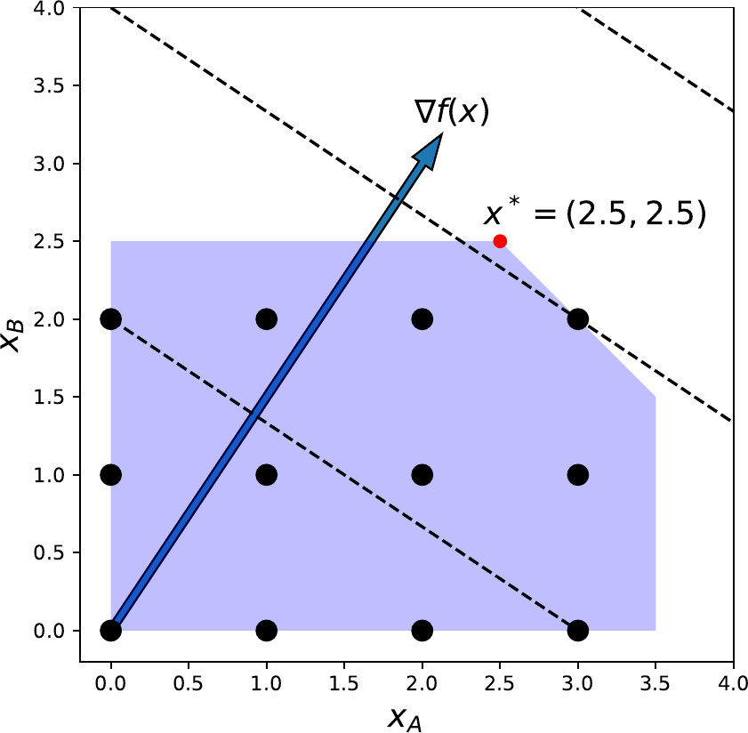
We can, however, solve the linear program relaxation of an integer linear program. This is obtained by dropping the restriction , replacing it with . Essentially, we pretend that an integer linear program is a standard linear program. This can be solved by the simplex method as before.
Unfortunately, solutions of the relaxation problem can be a long way from the optimal solution of the integer linear program. If the feasible region near the optimal solution to the relaxation problem is “long and thin”, then points on the integer lattice surrounding can easily be infeasible. It is possible to construct cases where the difference in the objective function value between the integer linear program and it relaxation problem are arbitrarily large. This is illustrated in figure 5.2.
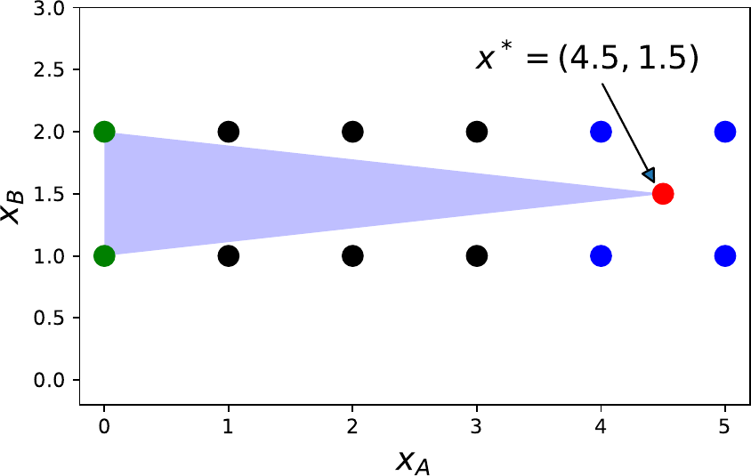
Typical methods for solving integer problems do use the simplex method to solve linear programs, typically applied to many pieces of the feasible region individually (later courses will cover this). The simplex method remains a key building block.
5.2 Total unimodularity
5.2.1 When relaxation works
There are, however, problems where the relaxation problem works. Consider the problem
where . This can be constructed by scaling each row of to make integer.
Consider the relaxation problem where all restrictions are dropped. For any optimal (basic) solution of the relaxation problem we have
We have that is integer. If is also integer it follows that is integer. Therefore the solution to the linear program is also a solution to the integer linear program, and the simplex method will work.
5.2.2 Total unimodularity
We want some criteria that checks when the inverse of a matrix is integer, without having to compute it and enumerate the entries. We say that a matrix is called total unimodular if the determinant of all its square submatrices takes values in .
If is total unimodular then is integer.
The inverse of can be written as
where and is the submatrix obtained from by deleting row and column .
Since is total unimodular and hence , and also . Therefore is integer.
It is possible to frame the shortest path problem as an integer linear program, and to prove that the constraint matrix is total unimodular so that it can be solved using the simplex method. However, more efficient methods are available as we will see next.
Graphs
6.1 Introduction
The idea of a graph (not in the figure or plotting sense, but as a structure) was introduced in the century to ask questions about paths. The idea now appears everywhere, but transport maps remain one of the key examples. A graph will abstract away all of the details and only show destinations (usually as points) and connecting paths between destinations (usually as lines), together with minimal extra information (such as the distance along a path, or the cost to travel along it).
The mathematical structure can be used to answer a number of detailed questions, but one key question is fundamental. Given a graph with paths linked to distances, what is the shortest distance between two given points?
6.2 Directed graphs
The mathematical definition of a (directed) graph is the ordered pair , where the sets are
-
the set of vertices (or nodes) , with ;
-
a set of ordered pairs , excluding self loops, called arcs, with .
Given an arc , the node is called the tail and node the head. In a directed graph, travel is only possible from the tail to the head (so imagine drawing an arrow on the arc).
We have not explicitly said what space the nodes are drawn from. In general it does not matter. When giving mathematical examples it is typical to use the natural numbers, so , and the node number labels the destination. When thinking about concrete transport examples, it can make more sense to use a name or an alphanumeric code. A simple directed graph using integers is illustrated in figure 6.1.
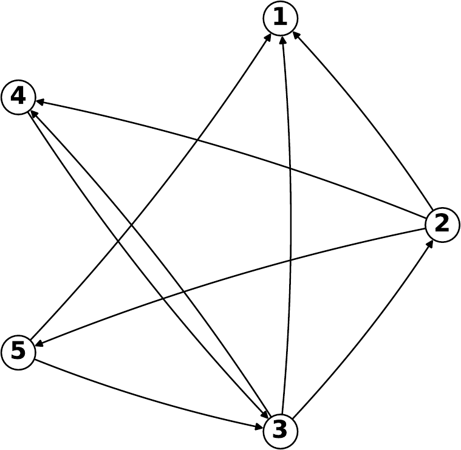
6.2.1 Definitions
We call a node adjacent to another node if . As, by construction, there are no self-loops allowed, a node cannot be adjacent to itself.
We call an arc incident to a node if for some node . So an arc is incident on a node if there is some other node in the graph that uses the arc to move to the node.
We call a directed graph complete if contains an arc for each distinct pair of nodes,
If the graph is complete we can immediately travel from any node to any other node using just one arc.
6.2.2 Number of arcs
In any directed graph, , with in the complete case.
In the complete case, each of the nodes is adjacent to all of the other nodes: we have arcs.
If the graph is not complete, some arcs are missing. Hence .
We called a directed graph sparse if .
6.2.3 Paths
If the graph is not complete then traversing a single arc may not be enough to get us from our start point to the desired end point. Instead we may have to traverse multiple arcs.
We define a path as a sequence
of consecutive and distinct arcs. Note that the head of each arc in the sequence matches the tail of the next arc, making the arcs consecutive.
Given a path, we say that a node is connected to a node if there is a path with and .
Finally, we say that a graph is connected if every pair of its nodes is connected. This is illustrated in figure 6.2.
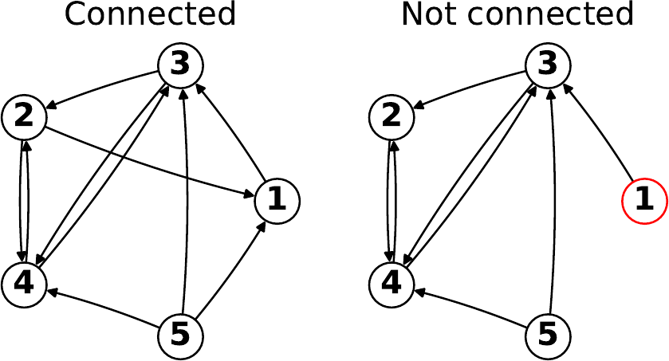
6.2.4 Cuts
So far everything has been set either at the level of individual nodes or at the level of the whole graph. For building algorithms that allow us to analyse paths as they move through the graph, we need to look at subsets of the graph, and how we might move into or out of those subsets.
Let be some part of graph (by looking at some suset of the vertices). We define the forward cut induced by to be the set of arcs “leaving ”. That is
Similarly, we define the backward cut induced by to be the set of arcs “entering ”. That is
These are illustrated in figure 6.3.
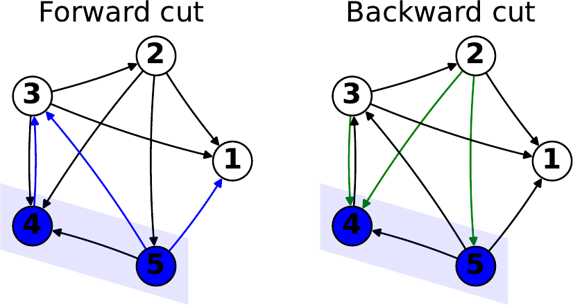
Of course, we can apply these definitions to the case to single nodes, by setting for any node . These have special names: the forward star of the node is , whilst the backward star of the node is . The sizes of these sets also have special names, with the out-degree of node being , and the in-degree of node being .
6.2.5 Representations
So far we have represented the graph using the vertices and the arcs . However, as in the linear programming case, there are multiple ways of representing the problem, each of which has its own advantages.
For simplicity these additional representations will assume that is given by consecutive integers labelling the nodes. Depending on choice these can either start from (so ) or (so ). The latter is more natural for a Python implementation, but the former more natural in many mathematical texts. With this assumption we only need to consider different representations of the arcs, .
Adjacency list
In the adjacency list approach we construct a list of size . Each component of the list contains a list of size at most , containing the indices of the nodes adjacent to . In terms of the stars, we have
The advantage of the adjacency list approach is that it is easy to use to navigate the graph. The component gives every node that is reachable from node using a single arc.
Adjacency matrix
In the adjacency matrix approach we construct a single matrix of size that contains only zeros and ones. The matrix entry is one if the associated arc exists and zero otherwise. Explicitly,
The adjacency matrix is less efficient for navigating the graph, but more efficient if we need to check if an arc exists.
6.3 Shortest paths
Now that we have the terminology to represent and discuss graphs, we want to turn the word problem “Find the shortest path connecting two points” into something precise.
6.3.1 The problem
The shortest path problem is as follows. Given a directed graph with a (non-negative) length function and two nodes , find an path of shortest total length.
The length function tells us the distance along any one single arc: equivalently, the distance between any two nodes or vertices when moving in a specific direction. This need not be the same in both directions (hence the notion of a directed graph): think about one-way streets, for example. As a notational shortcut we will often talk about lengths of paths in addition to lengths of arcs. As a path is a sequence of consecutive arcs without loops and the length function is non-negative, it follows that
If the arc then sometimes the notation is used, and so we can write
The two nodes in the problem are the source node from which we start and the target node that we are trying to get to.
There is a generalisation of the problem which is, in fact, no harder to solve. The single source shortest path problem is as follows. Given a directed graph with a (non-negative) length function and one node , find a path between and every other node in of shortest total length.
We note that it only makes sense to solve the shortest path problem if the source and target nodes are connected. Therefore it only makes sense to solve the single source shortest path problem if the entire graph is connected. Throughout the rest of this chapter we will assume that the graph is connected.
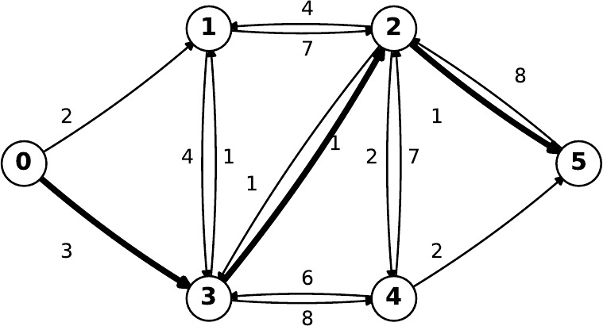
6.3.2 Subpath optimality
The key result in finding the shortest path is intuitively stated as “shortest paths are composed of shortest paths”. This seems either obvious or trivial. The precise result is
Let be an shortest path. For any pair of nodes visited by , with , the subpath from to is a shortest path.
This follows by contradiction. if is not a shortest path then there is another path that is strictly shorter than , . We can therefore define a new path by using the “shortcut” ,
From the positivity of the length function it immediately follows that
Therefore was not the shortest path, and we have a contradiction.
The original characterisation can now be more precisely stated as “every subpath of a shortest path is itself a shortest path”.
6.4 Dijkstra’s theorem
This is the central result that allow us to build an algorithm to solve the shortest path problem.
Let be a subset of the vertices that contains the source . Let , for all , be the length of the corresponding shortest path. Let
Then is a shortest path, where is a shortest path.
We show that any other path to any other vertex has either the same length as or a strictly larger one.
First, decompose the path as
where , , is a shortest path, , and is a shortest path. This is always possible due to the subpath optimality theorem. It allows us to concentrate on the arc that leaves the set . It follows that
Since we have chosen to minimise it must be true that
Since it follows that
Therefore for all such paths, and therefore is a shortest path.
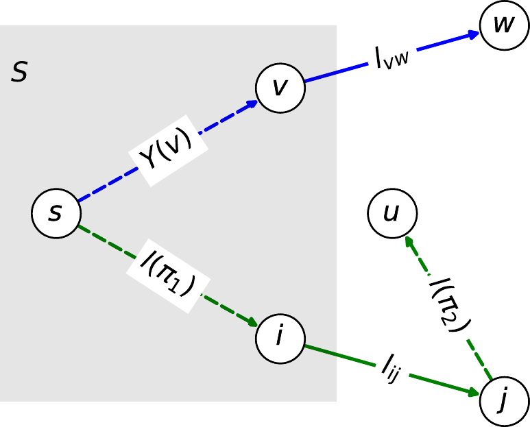
6.4.1 Dijkstra’s algorithm
We can now use subpath optimality and iteratively apply Dijkstra’s theorem to give us an algorithm. Starting from the source node, we keep adding nodes to the set of nodes we have “seen” so that we have the shortest path in that set.
Being more precise, but still sketching in words. We want to find the shortest path from the source node to every other node in the graph. We construct a set , starting from , of all the nodes we have so far “seen”. We also need two labels. The first is , the shortest path length from to . The second is , the predecessor of in the path. At the start and is undefined (as it makes no sense).
We then iterate as long as , so that is not empty. For each iteration we
-
1.
find that minimises ;
-
2.
set ;
-
3.
set ;
-
4.
set .
Note that, for every node , the shortest path length from the source adn the predecessor node on the shortest path are set only once, when the final shortest arc to is found and is added to .
This solves the single source shortest path problem. To solve the shortest path problem when the target is specified we can check to see if and, if so, stop at the end of that iteration. This makes no difference to the code complexity as, in the worst case that has to be considered, will be the last node added to .
6.4.2 Representing the length
We have seen multiple methods for representing the topology of the graph, each of which has their individual advantages. As Dijkstra’s algorithm depends crucially on minimising a length and looking up , it is important to have an easy and efficient way of representing the arc lengths.
Adjacency list
As in the graph case, we construct a list of size , where each component contains another list of size at most , containing the lengths of all arcs , in order of index .
This representation needs the adjacency list as well in order to give the index . Assuming that is a set of consecutive integers of size , the whole graph (including arc length information) is given once are given. The size of the graph is implicit in the length of the lists.
Adjacency matrix
Again this is similar to the graph case. We construct a matrix where, for each , the component is the length of the arc, or is infinity if no such arc exists.
This representation implicitly stores all the information about the graph, including its topology, so the adjacency matrix is not needed.
6.4.3 Implementing Dijkstra’s algorithm
The adjacency list form is the most efficient for checking whether an arc exists. The adjacency matrix form is the most efficient for checking what the length of the arc is. We assume that we are not limited by the amount of memory that each form takes, so we will use both forms in our implementation. In the code snippet below, L is the adjacency list representing the topology of the graph and Ml is the adjacency matrix representation of the length function.
1S = [s]
2Y = np.empty(n) # Value does not matter
3P = np.empty(n) # Only size matters
4Y[s] = 0
5while len(S) < n:
6 min_Y = np.inf
7 v, w = -1, -1
8 for i in S:
9 if j in S: # Only consider arcs leaving S
10 continue
11 if min_Y > Y[i] + Ml[i][j]:
12 min_Y = Y[i] + Ml[i][j]
13 v, w = i, j
14 Y[w] = Y[v] + Ml[v][w]
15 P[w] = v
16 S.append(w)
6.4.4 Complexity
To compute the complexity we consider the order of each line or block of the code above. We have
-
Line 1 writes a single value, taking ;
-
Lines 2-3 write values, taking each;
-
Line 4 writes a single value, taking ;
-
Line 5 loops over the whole graph, so is executed times. Each block takes:
-
Lines 6-7 write single values, taking ;
-
Lines 8-10 correspond to looping over in its entirety. This is executed times, where is the out degree of . Earlier results show . In the worst case . Each block takes:
-
Lines 11-13 are single comparisons or single writes, each taking ;
Therefore this inner loop has complexity .
-
-
Lines 14-16 are single writes, each taking ;
Therefore this outer loop has complexity .
-
Therefore the whole algorithm has complexity .
This is considerably faster than the complexity of the simplex algorithm (in its worst case).
6.4.5 A faster method
Finding the shortest path is a sufficiently important practical problem that we want to find an algorithm faster than . This can be done. The key issue is that by repeatedly scanning we are recomputing particular shortest path lengths multiple times. With additional structures we can reduce that computation.
We need the following observation:
The point here is that if we already know, for given node , which arc minimises , then we can find the arc giving the shortest path by looking at the vertices , rather than looking at the arcs in .
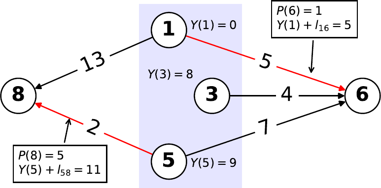
To use this observation to construct an algorithm, we change the way we think about the labels , representing the length of the shortest path and the predecessor index in that shortest path respectively. In the original algorithm they were set only when enters . Until that point they had no value, or their value was meaningless.
In the new algorithm, the meaning of the labels will remain the same as long as . If then the value of and will represent the length and predecessor index of the shortest path found up to the current iteration. At each iteration we will check and update the value of the labels when a new vertex enters .
1S = [s]
2Y = np.copy(Ml[s][:]) # These values now matter
3P = np.zeros(n) # These also now matter
4Y[s] = 0
5while len(S) < n:
6 min_Y = np.inf
7 w = -1 # Note: only w, not v
8 for j in V: # Note: change here
9 if j in S: # Only consider arcs leaving S
10 continue
11 if min_Y > Y[j]:
12 min_Y = Y[j]
13 w = j
14 S.append(w)
15 for h in L[w]: # New step: update labels
16 if h in S:
17 continue
18 if Y[h] > Y[w] + Ml[w][h]:
19 Y[h] = Y[w] + Ml[w][h]
20 P[h] = w
The explicit complexity calculation is
-
Line 1 writes a single value, taking ;
-
Lines 2-3 write values, taking each;
-
Line 4 writes a single value, taking ;
-
Line 5 loops over the whole graph, so is executed times. Each block takes:
-
Lines 6-7 write single values, taking ;
-
Lines 8-10 correspond to looping over in its entirety. In the worst case this is . Each block takes:
-
Lines 11-13 are single comparisons or single writes, each taking ;
Therefore this inner loop has complexity .
-
-
Lines 14 is a single write taking ;
-
Lines 15-17 correspond to looping over in its entirety again. In the worst case this is . Each block takes:
-
Lines 18-20 are single comparisons or single writes, each taking ;
Therefore this inner loop has complexity .
-
Therefore this outer loop has complexity .
-
Therefore this algorithm has complexity . When the graph is large this can be a substantial improvement in efficiency.
Note that this is not the fastest algorithm that exists. It is possible to construct algorithms with complexities .